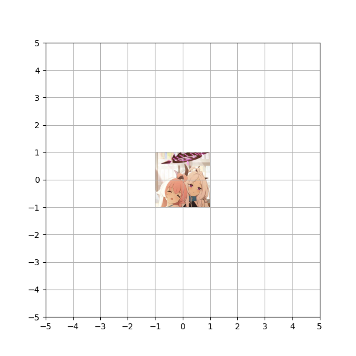
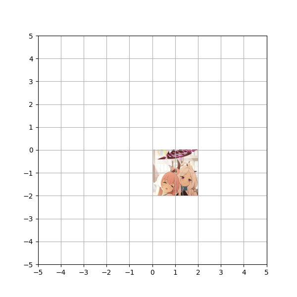
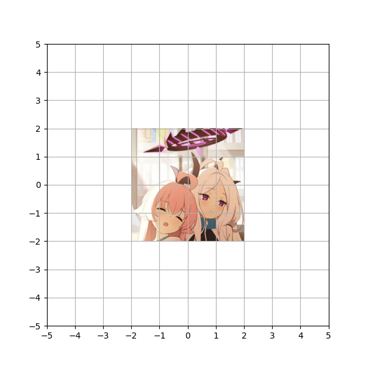
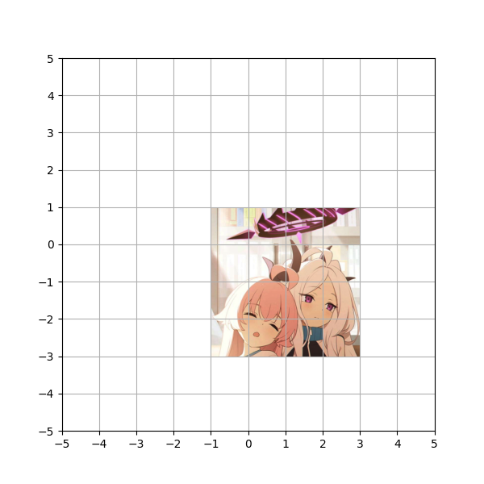
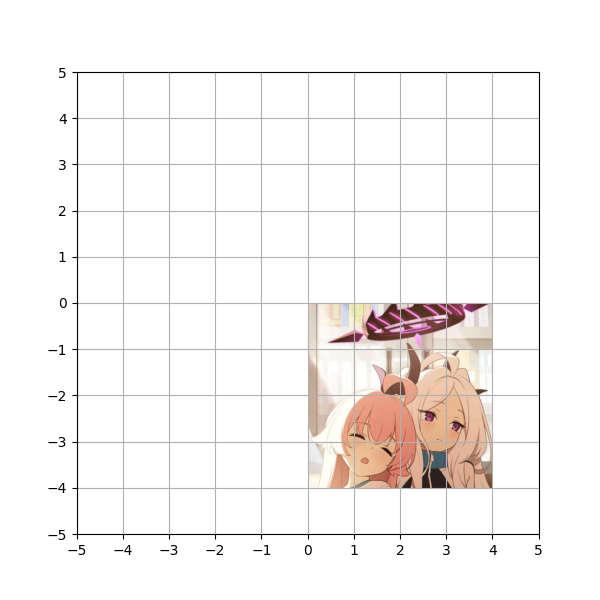

\(
\def\sc#1{\dosc#1\csod}
\def\dosc#1#2\csod{{\rm #1{\small #2}}}
\newcommand{\dee}{\mathrm{d}}
\newcommand{\Dee}{\mathrm{D}}
\newcommand{\In}{\mathrm{in}}
\newcommand{\Out}{\mathrm{out}}
\newcommand{\pdf}{\mathrm{pdf}}
\newcommand{\Cov}{\mathrm{Cov}}
\newcommand{\Var}{\mathrm{Var}}
\newcommand{\ve}[1]{\mathbf{#1}}
\newcommand{\ves}[1]{\boldsymbol{#1}}
\newcommand{\mrm}[1]{\mathrm{#1}}
\newcommand{\etal}{{et~al.}}
\newcommand{\sphere}{\mathbb{S}^2}
\newcommand{\modeint}{\mathcal{M}}
\newcommand{\azimint}{\mathcal{N}}
\newcommand{\ra}{\rightarrow}
\newcommand{\mcal}[1]{\mathcal{#1}}
\newcommand{\X}{\mathcal{X}}
\newcommand{\Y}{\mathcal{Y}}
\newcommand{\Z}{\mathcal{Z}}
\newcommand{\x}{\mathbf{x}}
\newcommand{\y}{\mathbf{y}}
\newcommand{\z}{\mathbf{z}}
\newcommand{\tr}{\mathrm{tr}}
\newcommand{\sgn}{\mathrm{sgn}}
\newcommand{\diag}{\mathrm{diag}}
\newcommand{\Real}{\mathbb{R}}
\newcommand{\sseq}{\subseteq}
\newcommand{\ov}[1]{\overline{#1}}
\DeclareMathOperator*{\argmax}{arg\,max}
\DeclareMathOperator*{\argmin}{arg\,min}
\newcommand{\data}{\mathrm{data}}
\newcommand{\N}{\mathcal{N}}
\newcommand{\Hil}{\mathcal{H}}
\)
Scale-Add
Definition. A scale-add is a vector function $f: \Real^d \rightarrow \Real^d$ of the form $$f(x) = \sigma x + \mu$$ where $\sigma \in \Real$ and $\mu \in \Real^d$.
| Image. |
Vector function. |
|  |
$$ f(x) = 2x + (1,-1)$$ |
What is the effect of the vector function on the image?
| (a) |
 |
(b) |
 |
| (c) |
 |
(d) |
 |
The answer is (c)
|
$\xrightarrow{\ \ \ f\ \ \ }$ |
|
How do you know? Well,
\begin{align*}
f(x) &= 2x + (1,-1) = \texttt{T}_{(1,-1)}(2x) = \texttt{T}_{(1,-1)}(\texttt{S}_2(x)) = (\texttt{T}_{(1,-1)} \circ \texttt{S}_2)(x).
\end{align*}
So,
- You double the size of the image first.
- Then you move it one unit to the left and then one unit down.
|
$\xrightarrow{\ \ \ \texttt{S}_{2}\ \ \ }$ |
|
$\xrightarrow{\ \ \ \texttt{T}_{(1,-1)}\ \ \ }$ |
|
There are two ways to denote a scale-add.
- $\texttt{T}_{\mu} \circ \texttt{S}_\sigma$
- $\sigma\, \mrm{id} + \mu$
So, $$ (\texttt{T}_{\mu} \circ \texttt{S}_\sigma)(x) = (\sigma\, \mrm{id} + \mu)(x) = \sigma x + \mu.$$
A scale-add always scales before adds.
[<<]
[Top]
[>>]